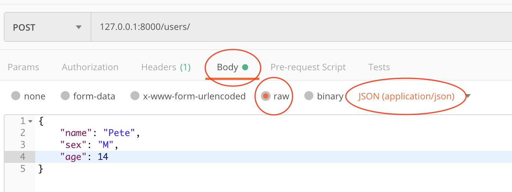

Create Routes the Good Way
Okay, now we're going to create our objects in a better way than in the section above. The code for this section is in a file called main-3.py. If you want to run it, use pipenv run uvicorn main-3:app --reload.
- The first thing we have to do is delete (or comment out) the routes and functions we wrote in the last section, since we're going to doing them in a better way. So, remove
create-userandupdate-user. - Now we're going to create an update user route using the request body to send data to the server instead of a query string. FastAPI's docs on it are here
- First we need to import
BaseModelfrom Pydantic withfrom pydantic import BaseModel. Keep in mind, that since Pydantic is a FastAPI dependecy, when we pip installed FastAPI, Pydantic got installed as well. So, we don't need to pip install it. - Now we're going to create a class which will represent the data coming in the body of the request. If you're following along in the FastAPI docs, note that this example will deviate a little from the FastAPI docs.
class UserIn(BaseModel): name: str age: str sex: str- We have inherited from
BaseModel. This is necessary for us to use it to represent a request body in FastApi.
- We have inherited from
- And now we'll create a route to handle the update.
@app.post("/users/") async def create_user(userIn: UserIn): user = User(userIn.name, userIn.sex, userIn.age) fakeDb[len(fakeDb)] = user return user - Now we have to hit this route with Postman. To do that, we need to set up our call with a request body.
- First, obviously, select the method as POST (remember it's in the dropdown to the left of the input where you enter the URL) and the URL
127.0.0.1:8000/users/. - Now we have to fill in the response body, so in Postman, below the URL input, in a tab which says "Body". Click on it and in the text field which appears write:
{ "name": "Pete", "sex": "M", "age": 14 } - Finally, we have to tell the server that our request body is json. That is, there are many formats we could have sent the request body in (XML, key/value, etc) and so we need to tell the server that we're sending JSON so the server knows how to parse what we're sending. Thus, under the Body tab, there is a radio button "raw". Click it and then select "JSON (application/json)" from the dropdown where it has probably defaulted to "Text". By doint this, we have told Postman to send a header called "content-type" along with our request with the value "application/json", which the server will read to determine that our body has been formatted as JSON.
- Your Postman screen should look something like this: 
- Now that we've set Postman up, we can hit our route. The result we see in Postman should be the new user we've created:
{ "username": "Pete", "gender": "M", "age": 14 }
- First, obviously, select the method as POST (remember it's in the dropdown to the left of the input where you enter the URL) and the URL
- Let's go back to the route we wrote again and look at what's going on.
@app.post("/users/") async def create_user(userIn: UserIn): user = User(userIn.name, userIn.sex, userIn.age) fakeDb[len(fakeDb)] = user return user- The first argument is of type UserIn. By doing this, we have told FastAPI to configure a route which will accept a request body in JSON of the form of the
UserInclass. Namely, it should havename,sex, andagefields. And so this is what we sent in the request body. - Just like we did with the query string data in the previous section, we're creating a new User object, but this time with the data from the request body.
- Finally, we are adding the user to our fake database (a little more succcintly this time)
- The first argument is of type UserIn. By doing this, we have told FastAPI to configure a route which will accept a request body in JSON of the form of the
- First we need to import